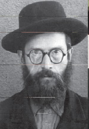
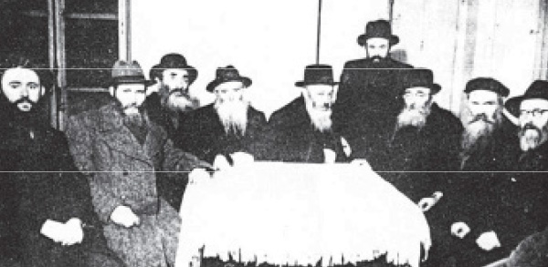
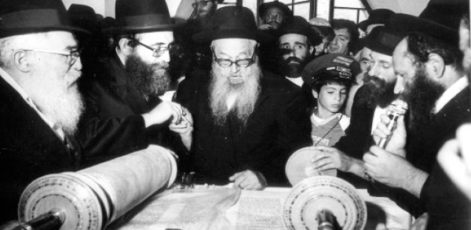

The Rebbe’s Mara D’asra
The life and work of Rabbi Zalman Shimon Dworkin a”h, the Mara d’Asra of Crown Heights * The one whom the Rebbe called, “My Mara d’Asra.” * To commemorate his passing on 17 Adar 5745/1985.

R’ Zalman Shimon would say that in his new school he discovered what luxurious lives the wealthy families had. In both chadarim the boys brought lunch since they stayed from morning to night. In R’ Yerucham’s school the boys brought a slice of bread smeared with oil, bread and onion, or just bread. In R’ Lazer’s school, some brought bread with butter or cheese. Some brought an apple too, and there were even those who brought a bulka, a roll made of white flour, in the middle of the week!
Supper in R’ Zalman Shimon’s house consisted of bread, which his mother served with some herring, one piece per child. That was the first and second course. Dessert was a cup of cold water. Tea with sugar was reserved as a Shabbos treat.
“Be careful with the children of the poor for from them does the Torah go forth,” say Chazal. Indeed, his father saw that young Zalman Shimon was very bright, and he decided that his son would benefit only by learning in a yeshiva. When he turned eleven, at the beginning of 5672, his father brought him to Tomchei T’mimim in Lubavitch. His father had wanted this a year earlier, but his mother managed to postpone the trip for a year.
Since he was so young, he entered what were called the chadarim of the yeshiva. Providing for the talmidim’s needs was mainly the responsibility of outside supporters, donors, parents and relatives. Without any support whatsoever, R’ Zalman Shimon fulfilled the requirements by which Torah is acquired, i.e. “bread in salt” etc. He devoted himself to his studies and did very well.
When he learned in the class of the Dvinsker, R’ Yehoshua Arsh, he was greatly beloved by his teacher. When he became bar mitzva, his teacher made him a seudas bar mitzva and even bought t’fillin for him, which cost a fortune in those days.
R’ Zalman Shimon continued to progress in his learning until he was accepted in the large zal of the yeshiva. His special qualities and character were recognized, but he remained a modest unassuming boy and they said that he was a p’nimi by nature. He merited many kiruvim (signs of affection) from the Rebbe Rashab and the Frierdike Rebbe.
He learned in Yeshivas Tomchei T’mimim for 13 years and was one of the pillars of the yeshiva. His main influences were R’ Shmuel Borisover for Nigleh and R’ Shmuel Grunem for Chassidus. He was also close with R’ Yehuda Eber (may Hashem avenge his blood) and R’ Avrohom Eliyahu Axelrod. When the Rebbe moved from Lubavitch to Rostov, R’ Zalman Shimon was from the nucleus that remained, and the yeshiva was reestablished with him in Kremenchug and then in Rostov.
After the Rebbe Rayatz was arrested briefly in Rostov, all the talmidim went home. The arrest and the contagious diseases that were rampant in Rostov precluded the continued existence of the yeshiva there. R’ Binyamin Shlomo Gansburg of Haditch arrived in Rostov and told the bachurim that Anash in Poltava were willing to support the yeshiva.
R’ Zalman Shimon asked the Rebbe Rayatz in yechidus about whether he should go to Poltava. The Rebbe was very pleased with the idea and blessed him with much success. The Rebbe then said: When you came to Rostov, you were honored with illness, hunger and the GPU. May Hashem bless you that this trip be successful and a good beginning for the opening of Yeshivas Tomchei T’mimim in Poltava.
R’ Zalman Shimon, Yehoshua Korf, and Eliyahu Valatzki, received permission to go to Poltava for a limited time. Their going and establishing a yeshiva was so important to them that they forwent attending the wedding of the Rebbe’s daughter to Rashag, and instead took the train to Poltava. It was not an easy trip. They were removed from the train in the middle of the journey and were prevented, at gunpoint, from getting back on the train. They had to walk the rest of the way until they arrived in Poltava on the Friday before Shavuos 5681/1921.
R’ Zalman Shimon remained in Poltava until Pesach 5683 and then went home to Rogatchov for Pesach. After Pesach a letter arrived that informed him that the yeshiva had moved to Charkov and he went immediately to Charkov. The yeshiva lasted only a short time in Charkov, and from there the bachurim went to Rostov where they learned during the winter of 5684.
The yeshiva was closed at the end of the winter and the Rebbe moved to Leningrad. The Rebbe told six bachurim, including R’ Dworkin, to remain in Rostov and study sh’chita. They then went to acquire practical expertise at the slaughterhouse in Vitebsk. By that time R’ Zalman Shimon had already received smicha on the halachos of Yoreh Dei’a, Even HaEzer and Choshen Mishpat. He also studied mila but did not want to actually perform it.
In 5686 he married Tzivia, daughter of R’ Menachem Mendel Dubrawski who was a rav in Krolevets. A year after his marriage he was appointed rav and shochet in the town of Voronezh in the Ukraine. After a few years he moved to Staradov and served as the rav there. Despite the difficult conditions and the communist persecution, he tried to spread Torah secretly and in public, in shiurim with b’nei Torah and with simple people, in Nigleh and Chassidus. Parnasa was hard but he was not deterred.
Government persecution and terror reached their peak in 1937-1938. Rabbanim and Chassidim were arrested en masse and tortured. Many were sent to Siberia and never returned. Government agents came to the Dworkin’s house too but the Rebbetzin managed to tell her neighbor, who quickly went to inform R’ Zalman Shimon about the unwelcome guests. He left the city that same day and in a circuitous manner went to Leningrad.
After some time, his wife was able to leave the city and they settled in Leningrad, where R’ Zalman Shimon worked as a bookbinder and continued teaching Torah.
When World War II began, Leningrad was under siege by the accursed Germans. Aside from those killed by bombs, thousands died of starvation, thirst, and the terrible cold. R’ Dworkin collected the bodies of Jews that he found, sometimes entire families, and took them in covered wagons to the big shul from where they were taken to the cemetery.
When the siege was broken in one area, many people were able to leave including R’ Dworkin and his wife, bloated from hunger and with their skin sticking to their bones. From Leningrad the refugees were taken to the south of Russia where they slowly regained their strength. After moving from place to place, they decided to travel to Samarkand where most Lubavitcher refugees had settled. They arrived in Samarkand in 5703 and R’ Dworkin worked as a guard at a government hospital.
The Lubavitchers in Samarkand began to recover from the starvation and epidemics, and the askanim got busy establishing a yeshiva that grew from day to day. R’ Yona Cohen, the director of Yeshivas Tomchei T’mimim in Russia, made a special trip from Tashkent to Samarkand to R’ Zalman Shimon’s home. They spent the entire night talking until, towards dawn, R’ Yona got to the point. He managed to convince R’ Zalman Shimon to accept the position of rosh yeshiva of the new yeshiva. R’ Zalman Shimon served as rosh yeshiva even after they left Russia for Poking and Brunoy.
In 5710, he led a group of shochtim, bodkim and menakrim who traveled from Paris to Ireland to kasher a plant that manufactured kosher meat preserves for the Jews of Eretz Yisroel. On 10 Shvat 5710, while in Ireland, he dreamed that Rebbetzin Rivka rushed over to the Aron Kodesh, grabbed a Torah scroll, and ran to the doorway with it. When he woke up he felt that something terrible had happened in Beis Chayeinu. [Indeed, the Rebbe Rayatz had passed away that night.]
In 5713, the Dworkins left France for Pittsburgh, where R’ Dworkin became the Maggid Shiur in the top class which had just been added to Achei T’mimim. They lived in Pittsburgh for seven years, and he attracted dozens of men from different backgrounds with whom he established shiurim in Nigleh and Chassidus.
In 5720, the Dworkins moved to Crown Heights where he served as rav along with R’ Shmuel Levitin and R’ Eliyahu Simpson. After the two other rabbanim passed away, he became the single Mara d’Asra of Lubavitch in Crown Heights.
He was the first rav to serve in the era of U’faratzta, an era that brought about the unprecedented growth of Lubavitch. Outreached triggered a myriad of halachic questions in kashrus, mikvaos, family matters and more. R’ Dworkin displayed genius along with creativity to solve these problems. For example, he amended the deed of commission used in the sale of chametz, because the bachurim and shluchim were not always knowledgeable in the laws of selling chametz.
In a number of letters the Rebbe tells people to consult with R’ Dworkin and to listen to what he says. In many other letters you can see the attitude and the special honor that the Rebbe demands be shown towards rabbanim. In a rare handwritten letter the Rebbe writes, “To telephone to … in my name that he should do as R’ Dworkin says. Of course, I take responsibility for this. It says explicitly in Chumash ‘do not veer right and left’ – i.e. not to be stringent when the rav says it is forbidden to be stringent… I anticipate your relaying good news that he is doing this, and thanks in advance for doing so as soon as possible.” All halachic questions that people asked of the Rebbe would be referred to R’ Dworkin.
Rebbetzin Dworkin passed away in 5736. R’ Dworkin continued spreading Torah until he passed away on 17 Adar 5745/1985 on Motzaei Shabbos. In his final days, when he was sick, he said, “Whatever was and whatever will be, I can say that ‘I worked with all my strength … by day I was consumed … and by night …’” The Rebbe went out to his funeral, and a few hours later, when he went to the Ohel, he went to see the grave.

LIFE IN LUBAVITCH
When R’ Dworkin went away to yeshiva in Lubavitch, the yeshiva was meant primarily for older bachurim. However, the hanhala of the yeshiva felt unable to refuse the many younger talmidim and so they opened a shiur for very young students. They called these shiurim “chadarim.” Due to the tremendous deficit in the yeshiva budget it was impossible to provide the talmidim with room and board, and parents had to pay fifty rubles a month for a talmid of this age.
For R’ Yeruchem, this amount was beyond what he could afford. Fortunately, a relative from Rogatchov committed to sending the money to the yeshiva. He stayed at one of the boarding houses in Lubavitch, which also provided daily meals in exchange for a few kopeks. He even had money for laundry. The situation was generally satisfactory.
The landlord was a miser who supported his family on the same level that he fed his tenants. For example, breakfast cost one and a half kopeks, which provided you with a cup of milk or a piece of black bread with a drop of cheese and a quarter cup of milk. Since the boy preferred to eat something too, the innkeeper would measure out a quarter cup of milk by using a straw that had been broken to that size.
The peaceful days did not last long. The rubles only came to the yeshiva for a few months. A week went by and another week and the child continued to be fed by the landlord who eagerly awaited payment that never arrived. The debt grew and the lady of the house decided that matters could not continue in this way.
She called for the boy and sadly informed him that since his relatives had stopped sending money he could no longer live with them. However, since he owed them a lot of money, he had to leave his pillow and blanket with them as a deposit.
The quiet, refined boy gathered his few things (the patched clothes, straw sack, etc.) and left with his bundle for the big zal. Going back home did not occur to him. He didn’t have the money nor the desire. Tomchei T’mimim was his home.
With great effort, the boy was assigned essen teg. At first it was two days a week, then three and a half days. On Shabbos, the boys ate with Rebbetzin Rivka who took care of them as a mother would. Rebbetzin Shterna Sarah and her group of women also supplied the boys with baked goods and soup at lunch time.
Since he was still missing days without meals, in order to obtain his weekly nutritional needs he had no choice but to utilize other methods. He approached one of the boys from a wealthy home, Moshe Gurary, and asked to go with him to his lodgings. Gurary said he was already taking many children with him. Instead, since he had pocket money, he offered to bring him money for food once a week.

DUAL REPRESENTATION
In 5741, R’ Dworkin had the honor of serving both as the representative of the Rebbe to the public and as the representative of the public to the Rebbe. On the first occasion, he was sent by the Rebbe as his personal representative to the siyum of the special children’s Torah scroll in Eretz Yisroel. R’ Dworkin was received with great honor as was fitting a representative of the Rebbe.
Erev Pesach fell out on Shabbos that year. At twelve o’clock, around the time for destroying chametz, most people were at home. Suddenly there was a surprise announcement – farbrengen! The Rebbe had told the secretary earlier but had told him not to publicize it.
There were hardly any people in 770 and the farbrengen was different than usual. There was no wine, as per the Rebbe’s instructions. You could not eat chametz, nor could you eat matza. On the Rebbe’s table was a plate with some bananas and a bottle of water. Those were the refreshments.
After the first sicha the Rebbe said that at first he thought of saying that wine should be brought to the farbrengen, but the Alter Rebbe paskens in Shulchan Aruch that one should not drink wine after the tenth hour. He wanted fruits to be brought, but trusting in Hashem that there would be many fruits worked only spiritually; there weren’t enough fruits for everyone. On the other hand, it wouldn’t be polite if he was the only one who ate and drank.
Therefore, since the fruits on the plate would not be enough for everyone, even if they were cut up, the fruits would be given to the Mara d’Asra. The eating and drinking that he and his beis din did would be like everyone eating and drinking.
The Rebbe set aside some pieces of banana and then gave the plate, with everything on it, as well as the bottle of water, to the Mara d’Asra.
There were other incidents in which R’ Dworkin served both these functions. When a Tanya was published in the merit of the residents of Crown Heights, it was he who gave it to the Rebbe. And when the Rebbe said on 10 Shvat 5736 that the rabbanim should pasken that Eretz Yisroel belongs to the Jewish people, after several rabbanim paskened the Rebbe told R’ Dworkin to pasken too.
THE ADVOCATES GAINED A WEEK
A week before R’ Dworkin passed away, his nephew [R’ Dworkin did not have any children] visited him in the hospital. While R’ Dworkin was dozing, he suddenly woke up and said, “There were advocates and prosecutors. The prosecutors did not give any time, but the advocates gave a week, and they won.”
His nephew was frightened, thinking that the disease had affected his uncle’s brain, but when R’ Dworkin passed away one week later, he understood his uncle’s cryptic words.
D. Levanon. "The Rebbe’s Mara D’asra." Beis Moshiach, no. 871 (February 27, 2013).